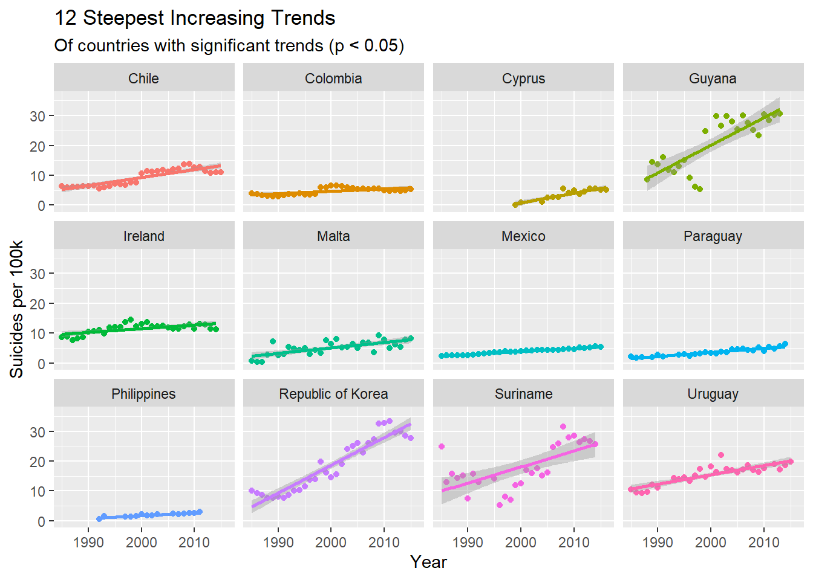
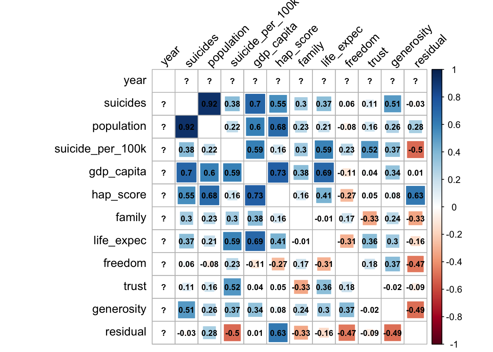

Model
Suicide rate chages with year
## read data
suicide <- read_csv("./data/master.csv") %>%
janitor::clean_names() %>%
as.data.frame()
suicide = suicide %>%
mutate(
continent = countrycode(sourcevar = suicide[, "country"],
origin = "country.name",
destination = "continent"),
gdp_per_capita = gdp_per_capita * 0.001,
gdp_per_capita = log(gdp_per_capita)
)
country_year <- suicide %>%
group_by(country, year, continent) %>%
dplyr::summarize(suicides = sum(suicides_no),
population = sum(population),
suicide_per_100k = (suicides / population) * 100000,
gdp_per_capita = mean(gdp_per_capita),
gdp_for_year = mean(gdp_for_year),
hdi_for_year = mean(hdi_for_year))
country_year_trends <- country_year %>%
ungroup() %>%
nest(-country) %>% # format: country, rest of data (in list column)
mutate(model = map(data, ~ lm(suicide_per_100k ~ year, data = .)), # for each item in 'data', fit a linear model
tidied = map(model, tidy)) %>% # tidy each of these into dataframe format - call this list 'tidied'
unnest(tidied)
country_year_sig_trends <- country_year_trends %>%
filter(term == "year") %>%
mutate(p.adjusted = p.adjust(p.value, method = "holm")) %>%
filter(p.adjusted < .05) %>%
arrange(estimate)
country_year_sig_trends$country <- factor(country_year_sig_trends$country,
ordered = T,
levels = country_year_sig_trends$country)Here are some plots about simple linear regression of suicide rate (suicide per 100k) and year in countries with significant trends (p < 0.05).
top12_increasing <- tail(country_year_sig_trends$country, 12)
country_year %>%
filter(country %in% top12_increasing) %>%
ggplot(aes(x = year, y = suicide_per_100k, col = country)) +
geom_point() +
geom_smooth(method = "lm") +
facet_wrap(~ country) +
theme(legend.position = "none") +
labs(title = "12 Steepest Increasing Trends",
subtitle = "Of countries with significant trends (p < 0.05)",
x = "Year",
y = "Suicides per 100k")
From the plots above we can see that South Korea shows the most significant increasing trend - an increase in suicide per 100 k of 0.931 people with every unit increase in year, which is similar to Guyana - an increase in suicide per 100k of 0.925 people with every unit increase in year.
Guyana’s suicide rate increased by 365% between 1998 and 1999 (5.3 to 24.8) which seems questionable - maybe it’s because they changed classification method of defining suicide.
top12_decreasing <- head(country_year_sig_trends$country, 12)
country_year %>%
filter(country %in% top12_decreasing) %>%
ggplot(aes(x = year, y = suicide_per_100k, col = country)) +
geom_point() +
geom_smooth(method = "lm") +
facet_wrap(~ country) +
theme(legend.position = "none") +
labs(title = "12 Steepest Decreasing Trends",
subtitle = "Of countries with significant trends (p < 0.05)",
x = "Year",
y = "Suicides per 100k")
Estonia shows the most significant decreasing trend - an decrease in suicide per 100 k of 1.31 people with every unit increase in year.
The following plot is about suicide rate (Suicides per 100 k) change per year of countries with significant trends (p < 0.05).
p1 = ggplot(country_year_sig_trends, aes(x = country, y = estimate, col = estimate)) +
geom_point(stat = 'identity', size = 2) +
geom_hline(yintercept = 0, col = "grey", size = 1) +
scale_color_gradient(low = "green", high = "red") +
geom_segment(aes(y = 0,
x = country,
yend = estimate,
xend = country), size = 1) +
labs(x = "", y = "Change Per Year (Suicides per 100k)") +
scale_y_continuous(breaks = seq(-2, 2, 0.2), limits = c(-1.5, 1.5)) +
theme(legend.position = "none") +
coord_flip() +
theme(
axis.text.y = element_text(size = 4)
)
ggplotly(p1) %>%
layout(title = "suicide rate change per year",
yaxis = list(title = "countries with P < 0.05"))We can get a conclusion that nearly a half of all countries have suicide rates that are changing linearly as time progresses. Between those countries that have suicide rate changing linearly as time progresses, there are 32 (2/3) countries have a decreasing trend. Overall, the suicide rate decreases as time progresses.
Relationship between economy and suicide
country_gdp = country_year %>%
ungroup(continent)
p2 = ggplot(country_gdp, aes(x = gdp_per_capita, y = suicide_per_100k, color = continent)) +
geom_point(size = 1) +
scale_x_continuous(labels=scales::dollar_format(prefix="$"), breaks = seq(0, 130000, 10000)) +
labs(title = "Correlation between GDP and Suicides rate",
x = "log(GDP (per capital)*0.001)",
y = "Suicides per 100k") +
theme(axis.text.x = element_text(angle = 90, hjust = 1))
ggplotly(p2)Because these data may have some influential points, so I will drop data with Cooks Distance larger than 4/n and then analysethe relationship between GDP per capital and suicide rate.
model1 <- lm(suicide_per_100k ~ gdp_per_capita, data = country_gdp)
gdp_suicide_no_outliers <- model1 %>%
augment() %>%
arrange(desc(.cooksd)) %>%
filter(.cooksd < 4/nrow(.)) %>% # removes 5/93 countries
inner_join(country_gdp, by = c("suicide_per_100k", "gdp_per_capita")) %>%
select(country, continent, gdp_per_capita, suicide_per_100k)
model2 <- lm(suicide_per_100k ~ gdp_per_capita, data = gdp_suicide_no_outliers)
summary(model2) %>%
tidy() ## # A tibble: 2 x 5
## term estimate std.error statistic p.value
## <chr> <dbl> <dbl> <dbl> <dbl>
## 1 (Intercept) 7.36 0.311 23.7 5.81e-111
## 2 gdp_per_capita 1.49 0.122 12.2 3.60e- 33The p-value is smaller than 0.05, so we can say that at 0.05 significance level, GDP per capital has association with its suicide rate.
Relationship between HDI and suicide
country_gdp_no_hdi = country_year %>%
drop_na() %>%
mutate(
hdi_for_year = mean(hdi_for_year)
)
p3 = ggplot(country_gdp_no_hdi, aes(x = hdi_for_year, y = suicide_per_100k, color = continent)) +
geom_point(size = 1) +
scale_x_continuous(labels=scales::dollar_format(prefix="$"), breaks = seq(0, 130000, 10000)) +
labs(title = "Correlation between HDI and Suicides rate",
x = "HDI",
y = "Suicides per 100k",
col = "continent") +
theme(axis.text.x = element_text(angle = 90, hjust = 1))
ggplotly(p3)As mentioned above, I will drop data with Cooks Distance larger than 4/n and then analysethe relationship between HDI and suicide rate.
model3 <- lm(suicide_per_100k ~ hdi_for_year, data = country_gdp_no_hdi)
hdi_suicide_no_outliers <- model3 %>%
augment() %>%
arrange(desc(.cooksd)) %>%
filter(.cooksd < 4/nrow(.)) %>% # removes 5/93 countries
inner_join(country_gdp_no_hdi, by = c("suicide_per_100k", "hdi_for_year")) %>%
select(country, continent, hdi_for_year, suicide_per_100k)
model4 <- lm(suicide_per_100k ~ hdi_for_year, data = hdi_suicide_no_outliers)
summary(model4) %>%
tidy() ## # A tibble: 2 x 5
## term estimate std.error statistic p.value
## <chr> <dbl> <dbl> <dbl> <dbl>
## 1 (Intercept) -10.4 2.10 -4.93 1.06e- 6
## 2 hdi_for_year 26.6 2.68 9.91 1.03e-21The p-value is smaller than 0.05, so we can say that at 0.05 significance level, hdi has association with its suicide rate.
Correlation between variables
## clean the data
happiness_2015 <- read_csv("./data/2015.csv") %>%
janitor::clean_names() %>%
mutate(
year = 2015
) %>%
select(-region, -standard_error) %>%
rename(hap_rank = happiness_rank,
hap_score = happiness_score,
gdp_capita = economy_gdp_per_capita,
life_expec = health_life_expectancy,
trust = trust_government_corruption,
residual = dystopia_residual
)
happiness_2016 <- read_csv("./data/2016.csv") %>%
janitor::clean_names() %>%
mutate(
year = 2016
) %>%
select(-region, -lower_confidence_interval, -upper_confidence_interval) %>%
rename(hap_rank = happiness_rank,
hap_score = happiness_score,
gdp_capita = economy_gdp_per_capita,
life_expec = health_life_expectancy,
trust = trust_government_corruption,
residual = dystopia_residual
)
happiness_2017 <- read_csv("./data/2017.csv") %>%
janitor::clean_names() %>%
mutate(
year = 2017
) %>%
select(-whisker_high, -whisker_low) %>%
rename(hap_rank = happiness_rank,
hap_score = happiness_score,
gdp_capita = economy_gdp_per_capita,
life_expec = health_life_expectancy,
trust = trust_government_corruption,
residual = dystopia_residual
)
happiness_2015 = happiness_2015[, c(1,11,2,3,4,5,6,7,8,9,10)]
happiness_2016 = happiness_2016[, c(1,11,2,3,4,5,6,7,8,9,10)]
happiness_2017 = happiness_2017[, c(1,11,2,3,4,5,6,7,9,8,10)]
happiness = rbind(happiness_2015, happiness_2016, happiness_2017)overall_data = merge(happiness, suicide, by = c("country", "year")) %>%
group_by(country, year, continent) %>%
dplyr::summarize(suicides = sum(suicides_no),
population = sum(population),
suicide_per_100k = (suicides / population) * 100000,
gdp_capita = mean(gdp_per_capita),
hap_score = mean(hap_score),
family = mean(family),
life_expec = mean(life_expec),
freedom = mean(freedom),
trust = mean(trust),
generosity = mean(generosity),
residual = mean(residual)
)
asia_overall = overall_data %>%
filter(continent == "Asia")
europe_overall = overall_data %>%
filter(continent == "Europe") correlation between suicide rate and other variavles in all countries
Num.cols <- sapply(overall_data, is.numeric)
Cor.data <- cor(overall_data[, Num.cols])
corrplot(Cor.data, method = 'square', addCoef.col = "black", tl.col = "black", tl.srt = 45, diag = FALSE, number.cex = .7) Countries in different continent may have different outcomes, which leading to the uncorrelation between suicide rate with other varaibles. So next let us start continent_degree analyses.
overall_data %>%
group_by(continent) %>%
summarise(n = n())## # A tibble: 5 x 2
## continent n
## <chr> <int>
## 1 Africa 3
## 2 Americas 11
## 3 Asia 17
## 4 Europe 36
## 5 Oceania 1Because there are few data about Africa and Oceania, so we only need to analyse three continents - Americas, Asia and Europe.
correlation between suicide rate and other variavles in Asia
Num.cols_asia <- sapply(asia_overall, is.numeric)
Cor.data_asia <- cor(asia_overall[, Num.cols_asia])
corrplot(Cor.data_asia, method = 'square', addCoef.col = "black", tl.col = "black", tl.srt = 45, diag = FALSE, number.cex = .7)Suicide rate in Asia has a slightly positive correlation with degree of satisfiction with family, freedom, but has a slightly negtive correlation with trust of government and gdp per capital.
correlation between suicide rate and other variavles in Europe
Num.cols_europe <- sapply(europe_overall, is.numeric)
Cor.data_europe <- cor(europe_overall[, Num.cols_europe])
corrplot(Cor.data_europe, method = 'square', addCoef.col = "black", tl.col = "black", tl.srt = 45, diag = FALSE, number.cex = .7)Suicide rate in Europe has a negative correlation with gdp per capital, happiness score, degree of satisfiction with family, freedom, trust of government and generasity, which means that if a country in Europe is more prosperous and has a relatively higher happiness score, it is more likely to have a lower suicide rate.
correlation between suicide rate and other variavles in Americas
americas_overall = overall_data %>%
filter(continent == "Americas")
Num.cols_america <- sapply(americas_overall, is.numeric)
Cor.data_america <- cor(americas_overall[, Num.cols_america])
corrplot(Cor.data_america, method = 'square', addCoef.col = "black", tl.col = "black", tl.srt = 45, diag = FALSE, number.cex = .7)
Suicide rate in America has a positive correlation with gdp per capital, happiness score, degree of satisfiction with family, freedom, trust of government and generasity, which means that if a country in Americas is more prosperous and has a relatively higher happiness score, it is more likely to have a higher suicide rate.